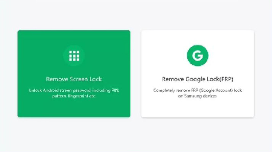

PassFab Android Unlocker

It is another popular option in unlocking software for Android whether it be Samsung, Huawei, LG etc. You can even unlock your old Samsung devices without any data loss. It helps you bypass the device locks in the secondhand purchases with ease which saves your time. PassFab Android Unlocker can bypass any android lock in safest possible way.
Pros
- Simple and clean interface
- Easy unlocking steps to unlock screen and Google lock
- Unlocks old Samsung devices without losing data
- Available for both Windows and Mac
- Bypasses FRP without any code
Cons
- Not available for Sony, Oppo, and OnePlus
- Do not support in removing face lock
- Some users have given feedback that they didn’t receive timely email response from PassFab customer service